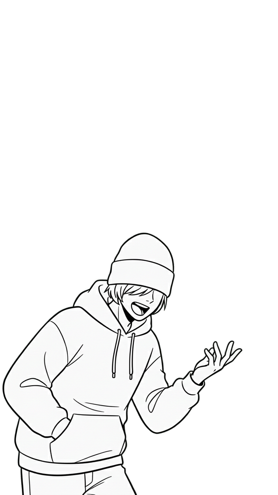
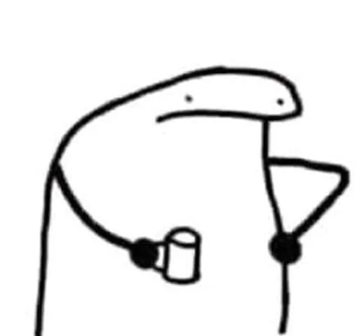
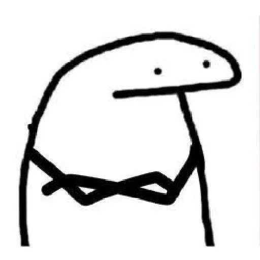
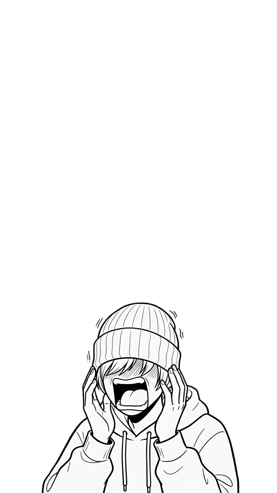

شروحات تقنية مبسطة
01 · وش يعني API؟
API
Application Interface
{ }
</>


أبسط مما تتوقع
فكرة واحدة واضحة



تخيل إنك داخل مطعم

أنت (الطاولة)
المطبخ (الأكل)

ممنوع تدخل المطبخ!


النادل (الوسيط)
الطلب
الأكل


تطبيق أول
يحتاج خدمة
API
الوسيط
تطبيق ثاني
الأنظمة
طلب ➔ Request
⬅ الرد Response

✖ ممنوع الدخول المباشر


متجر إلكتروني
سماعة احترافية
فاتورة #402
400 SAR
وسيلة الدفع:
الدفع عبر تابي
4 دفعات شهرية
tabby
تم الدفع بنجاح ✓

API تابي
معالجة
تفاصيل الفاتورة
400 SAR
تقسيم على دفعات:
100
1
100
2
100
3
100
4

تطبيق 1
تطبيق 2
جسر الـ API
بدون كشف التفاصيل
تابعنا الآن ↗
لشروحات تقنية أكثر